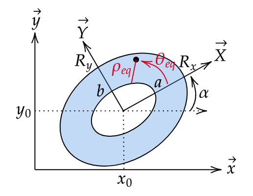

pyzernike.xy_zernike_polynomial#
- pyzernike.xy_zernike_polynomial(x: ndarray, y: ndarray, n: Integral | Sequence[Integral] | ndarray, m: Integral | Sequence[Integral] | ndarray, Rx: Real | None = 1.0, Ry: Real | None = 1.0, x0: Real | None = 0.0, y0: Real | None = 0.0, alpha: Real | None = 0.0, h: Real | None = 0.0, x_derivative: Integral | Sequence[Integral] | ndarray | None = 0, y_derivative: Integral | Sequence[Integral] | ndarray | None = 0, default: Real = nan, *, precompute: bool = True, to_list: bool = True) ndarray | List[ndarray][source]#
Compute the Zernike polynomials on an elliptic annulus for Cartesian coordinates \((x, y)\), and their first and second derivatives with respect to \(x\) and \(y\).

The parameters of the elliptic annulus domain.#
The Zernike polynomials are extended to an elliptic annulus [1] by evaluating them at the equivalent polar coordinates \((\rho_{eq}, \theta_{eq})\) of the point (see
pyzernike.cartesian_to_elliptic_annulus()):\[Zxy_{n}^{m}(x, y) = Z_{n}^{m}\left(\rho_{eq}(x, y), \theta_{eq}(x, y)\right)\]The derivatives with respect to \(x\) and \(y\) are obtained with the chain rule. For \(z, w \in \{x, y\}\):
\[\frac{\partial Zxy_{n}^{m}}{\partial z} = \frac{\partial Z_{n}^{m}}{\partial \rho} \frac{\partial \rho_{eq}}{\partial z} + \frac{\partial Z_{n}^{m}}{\partial \theta} \frac{\partial \theta_{eq}}{\partial z}\]\[\frac{\partial^2 Zxy_{n}^{m}}{\partial z \partial w} = \frac{\partial^2 Z_{n}^{m}}{\partial \rho^2} \frac{\partial \rho_{eq}}{\partial z} \frac{\partial \rho_{eq}}{\partial w} + \frac{\partial^2 Z_{n}^{m}}{\partial \rho \partial \theta} \left( \frac{\partial \rho_{eq}}{\partial z} \frac{\partial \theta_{eq}}{\partial w} + \frac{\partial \theta_{eq}}{\partial z} \frac{\partial \rho_{eq}}{\partial w} \right) + \frac{\partial^2 Z_{n}^{m}}{\partial \theta^2} \frac{\partial \theta_{eq}}{\partial z} \frac{\partial \theta_{eq}}{\partial w} + \frac{\partial Z_{n}^{m}}{\partial \rho} \frac{\partial^2 \rho_{eq}}{\partial z \partial w} + \frac{\partial Z_{n}^{m}}{\partial \theta} \frac{\partial^2 \theta_{eq}}{\partial z \partial w}\]The available derivatives
(x_derivative, y_derivative)are(0, 0),(1, 0),(0, 1)(gradient), and(2, 0),(0, 2),(1, 1)(Hessian matrix). For higher orders, usepyzernike.cartesian_to_elliptic_annulus()andpyzernike.zernike_polynomial()with the Faà di Bruno’s formula.If \(|m| > n\) or \(n - m\) is odd, the polynomial is zero.
Where the point is outside the elliptic annulus (\(\rho_{eq}\) outside \([0, 1]\)), or the coordinates are not finite, the output is set to
default.
Shape of the inputs and of the output.
n,m,x_derivativeandy_derivativecan each be a single integer or a sequence of integers (list, tuple or 1D numpy array):If all of them are integers, a single polynomial is computed and returned as an array with the shape of
x.If at least one of them is a sequence, the integers are repeated to the length \(N\) of the sequences (which must all have the same length), and \(N\) polynomials are computed. They are returned as a list of \(N\) arrays with the shape of
x(to_list=True), or as a single array of shape \((N, \dots)\) (to_list=False).
See also
pyzernike.zernike_polynomial()to compute the Zernike polynomials in polar coordinates.pyzernike.cartesian_to_elliptic_annulus()to compute the equivalent polar coordinates.The page Mathematical description for the extension of the Zernike polynomials to the elliptic annulus.
- Parameters:
x (numpy.ndarray) – The x Cartesian coordinates with any shape
(...).y (numpy.ndarray) – The y Cartesian coordinates with the same shape as
x. Ifxandyare floating point arrays of the same dtype (e.g.numpy.float32), this dtype is kept. Otherwise, both are converted tonumpy.float64.n (Union[Integral, Sequence[Integral], numpy.ndarray]) – The radial order(s) \(n\).
m (Union[Integral, Sequence[Integral], numpy.ndarray]) – The azimuthal frequency(ies) \(m\).
Rx (Optional[Real], optional) – The semi-axis \(R_x\) of the ellipse along its x axis. Must be strictly positive. Default is 1.0.
Ry (Optional[Real], optional) – The semi-axis \(R_y\) of the ellipse along its y axis. Must be strictly positive. Default is 1.0.
x0 (Optional[Real], optional) – The x coordinate \(x_0\) of the center of the ellipse. Default is 0.0.
y0 (Optional[Real], optional) – The y coordinate \(y_0\) of the center of the ellipse. Default is 0.0.
alpha (Optional[Real], optional) – The rotation angle \(\alpha\) of the ellipse in radians. Default is 0.0.
h (Optional[Real], optional) – The ratio \(h\) of the inner to the outer semi-axes, in \([0, 1)\). Default is 0.0 (full ellipse).
x_derivative (Optional[Union[Integral, Sequence[Integral], numpy.ndarray]], optional) – The order(s) of the derivative with respect to \(x\). Default is 0 (no derivative).
y_derivative (Optional[Union[Integral, Sequence[Integral], numpy.ndarray]], optional) – The order(s) of the derivative with respect to \(y\). Default is 0 (no derivative).
default (Real, optional) – The value set outside the elliptic annulus or where the coordinates are not finite. Default is
numpy.nan.precompute (bool, optional) – If True, the powers of \(\rho\) and the cosine and sine terms are cached and shared between the polynomials, which is faster when several polynomials are computed at once. If False, they are recomputed for each polynomial, which uses less memory. Default is True.
to_list (bool, optional) – Only used when several polynomials are computed. If True, the output is a list of arrays. If False, the output is a single array of shape \((N, \dots)\). Default is True.
orders (None is accepted for all the parameters of the ellipse and for the derivative)
value. (and means the default)
- Returns:
If
n,m,x_derivativeandy_derivativeare integers: an array with the shape ofx.Otherwise, if
to_listis True: a list of \(N\) arrays with the shape ofx.Otherwise: an array of shape \((N, \dots)\), where
output[i]corresponds to(n[i], m[i], x_derivative[i], y_derivative[i]).
The dtype is the common floating point dtype of
xandy(numpy.float64by default).- Return type:
Union[numpy.ndarray, List[numpy.ndarray]]
- Raises:
TypeError – If
xorycan not be converted to a floating point array, if a parameter of the ellipse ordefaultis not a real number, ifn,m,x_derivativeory_derivativeis not an integer or a sequence of integers, or ifprecomputeorto_listis not a boolean.ValueError – If
xandydo not have the same shape, ifRxorRyis not strictly positive, ifhis not in \([0, 1)\), if the sequences do not have the same length, or if a derivative(x_derivative, y_derivative)is not available.
References
Examples
Compute the defocus \(Z_{2}^{0}\) on a circle of radius 10 centered at \((1, 1)\):
import numpy from pyzernike import xy_zernike_polynomial X, Y = numpy.meshgrid(numpy.linspace(-10, 10, 100), numpy.linspace(-10, 10, 100)) Z20 = xy_zernike_polynomial(X, Y, n=2, m=0, Rx=10, Ry=10, x0=1.0, y0=1.0) # array of shape (100, 100)
Compute its gradient and its Hessian matrix (
nandmare repeated):dZ_dx, dZ_dy = xy_zernike_polynomial(X, Y, n=2, m=0, Rx=10, Ry=10, x0=1.0, y0=1.0, x_derivative=[1, 0], y_derivative=[0, 1]) d2Z_dx2, d2Z_dy2, d2Z_dxdy = xy_zernike_polynomial(X, Y, n=2, m=0, Rx=10, Ry=10, x0=1.0, y0=1.0, x_derivative=[2, 0, 1], y_derivative=[0, 2, 1])